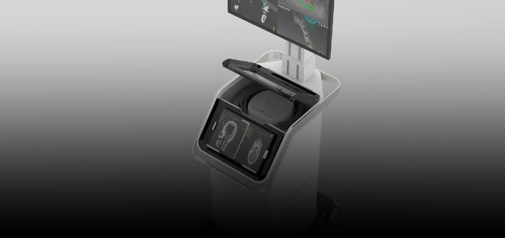
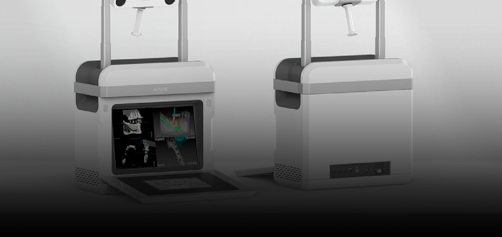

Globally Recognized for Expertise and Reliability
We remain committed to advancing our technology and quality standards to improve treatment outcomes and support both patients and healthcare professionals.
-
A4LAB
"Advanced Medical Device"
"Automatic Robot system"
"Artificial Intelligent system"
"Academic Education"
-

01 XAVE PrimeXAVE provides real-time 3D visualization and 1 mm precision navigation, improving surgical accuracy, efficiency, and clinical outcomes.
-

02 XAVE AirXAVE Air delivers precise, fast, and intuitive navigation in a compact and cost-effective platform. Designed for small operating rooms and educational settings, it provides reliable guidance, streamlined workflows, and easy operation without compromising accuracy or performance.